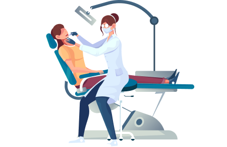

Наша многолетняя практика подтверждает, что контакт возможен с каждым ребенком.
Психолог помогает
создать ситуацию доверия, а благодаря дружеской обстановке в игровой комнате малыши
чувствуют
себя комфортно. Ребенок привыкнет к доктору, и найдет с ним общий язык. Перед тем как начать
осмотр, врач проведёт знакомство с кабинетом и креслом в игровой форме.Наша многолетняя
а благодаря дружеской.Наша многолетняя практика
подтверждает, что контакт возможен с каждым ребенком.Психолог помогает создать ситуацию Перед ситуацию ьсоздать ситуациюьсоздать ситуацию ситуацию ситуацию
подтверждает, что контакт возможен с каждым ребенком. Психолог помогает создать ситуацию
доверия, а благодаря дружеской.Наша многолетняя практика
подтверждает, что контакт возможен с каждым ребенком.Психолог помогает создать ситуацию
доверия, а благодаря дружеской обстановке в игровой комнате малыши чувствуют себя комфортно.
Ребенок привыкнет к доктору, и найдет с ним общий язык. Перед тем как начать осмотр, врач
проведёт знакомство с кабинетом и креслом в игровой форме.